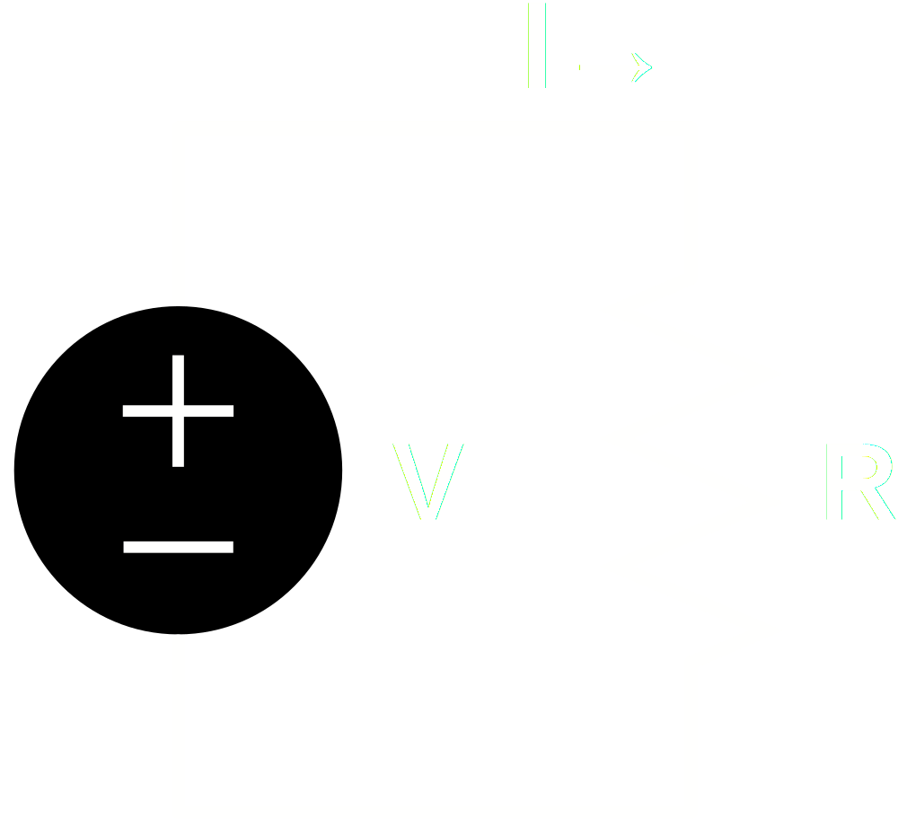
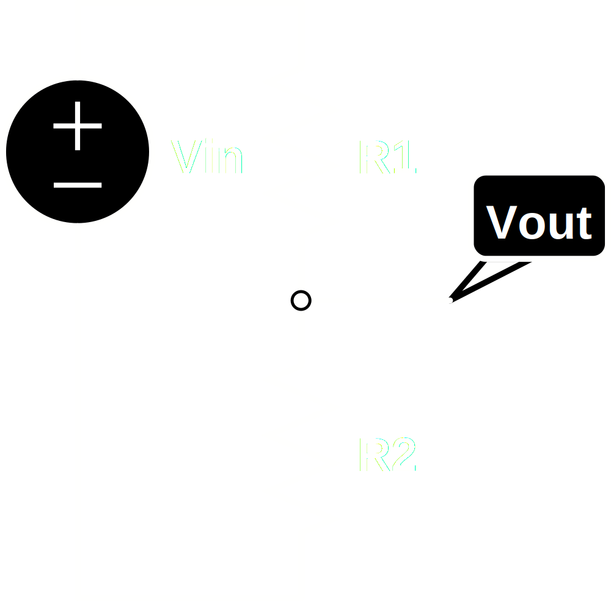
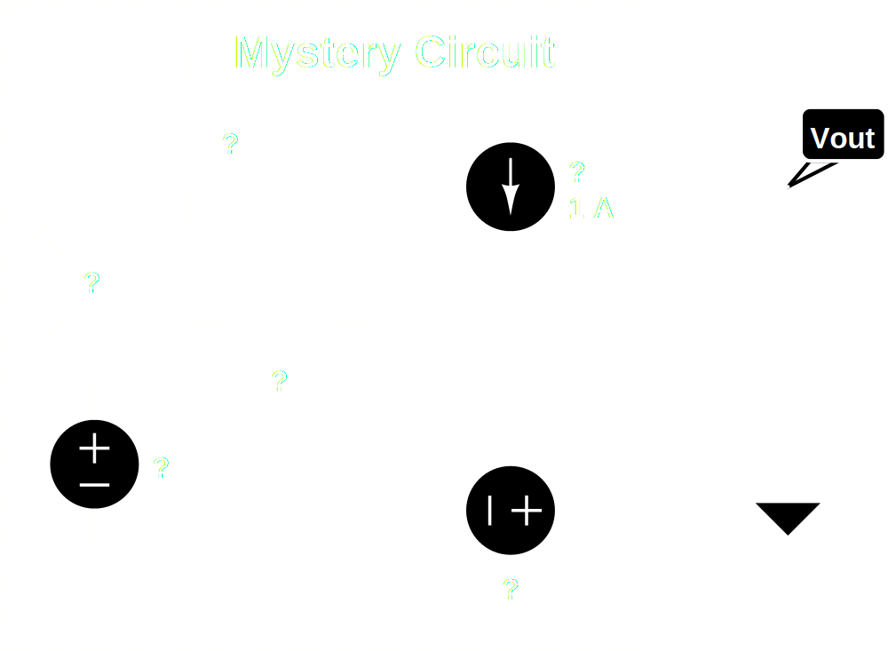

© 2013 Chris Rossi
Impedance is the abstraction of resistance to include the effects of resistance, capacitance and inductance on AC signals.
Huh?
Ok, let's back up.
Let's say you have an object and you apply a voltage across it from one side to the other. If the amount of current that flows through the object is linearly proportional to the amount voltage applied to it, then that object is "ohmic" and is said to have resistance.
A good operational definition of resistance, then, is the ratio of voltage to current in an object with an applied voltage:
Represented schematically:

This relationship is called Ohm's law and is more commonly expressed as:
We may as well go ahead and introduce the voltage divider. This will come up a lot.

Here we can see that the applied voltage is split across the two resistors, R1 and R2.
Intuitively, we can see that if both resistors have the same resistance, then the voltage across each one must be equal, so Vout must be half of Vin.
Just as intuitively, we can see that if R1 has zero resistance then all of the voltage must appear across R2, so Vout is equal to Vin. This is functionally identical to the situation on the previous slide.
Our intuition, then, is that the voltage at Vout, which is the portion of Vin that appears across V2, must be proportional to the portion of the total resistance represented by R2. Expressed mathematically, we get the simple equation:
Most of the time this comes up because you need to connect one circuit to another circuit. This is called coupling.
You might be connecting the output of one piece of equipment to the input of another, or you might be connecting one part of a circuit to another part of a circuit.
Electrically, it's all the same. The electrons don't care where one box ends and another begins.
You've probably heard the terms "input impedance" and "output impedance". If you don't know what they mean, it can get confusing.
Understanding of input and output impedance is essential to understanding coupling.
To get started, we can simplify and narrow our discussion to input and output resistance.
Input resistance is relatively simple to understand. If you apply a signal voltage to the input of some circuit, a certain amount of current will flow.

We can treat the circuit on the right as a kind of black box. We don't really need to know what's in it. All we need to know is how much current flows when we apply an input voltage.
The ratio of voltage to current is the input resistance of the circuit. There doesn't have to really be a resistor, Rin, in the circuit. But we can calculate an equivalent resistor from the amount of current that flows in the circuit for a given voltage.
The lower the input resistance, the more current will flow when we drive it.
The current to drive the circuit must come from the preceeding circuit.
The more current required to drive a circuit, the larger a "load" it is to whatever is driving it.
This can get confusing, since a circuit with a low input resistance is said to be a large load.
The amount of current a circuit can actually provide to drive a particular load is determined by its output resistance.
For the author, output impedance was much harder to understand than input impedance. To really understand it, we need to turn to our friend Thévenin and his theorem.
What Thévenin says is that if you have an arbitrary linear circuit, and you choose two nodes in that circuit as your output port, the entire behavior of the circuit at that output port can be characterized by a a single voltage source and a single resistor:
 
This is a very useful simplification!
We don't have to know what is in that circuit. As long as we can characterize its behavior at the output port we can replace it with its Thévenin equivalent.
Rth is known as the Thévenin equivalent resistor.
You might be able to see now where our output resistance is.
Output resistance is nothing more than the Thévenin equivalent resistance of our circuit, as seen from the output port.
Imagine shorting the two nodes of the output port together. The full output voltage would appear across Rth, so the current would be Vth / Rth. This would be the maximum current this circuit could ever drive to another circuit.
One last pedantic point.
Thévenin's theorem, and therefore his equivalent circuit, really only apply to circuits composed entirely of linear components.
Strictly speaking, this is also true for the equivalent resistor we found for modeling input resistance.
Active components like transistors and vacuum tubes tend to have current to voltage relationships that are non-linear.
When analyzing amplifier circuits, though, we tend to use a linear approximation, known as the "small signal" approximation.
Our equivalent circuits, then, are valid within the limits of our linear, or "small signal" approximation.
Let's see what happens when our simplified output circuit drives our simplified input circuit:

Do you see the voltage divider formed by the output and input resistances?
You can see that what we've labeled as Vin is the effective input voltage after the output voltage is divided by the input and output impedances:
You can see from the formula above that the bigger Rin is with respect to Rout, the closer Vin gets to Vout.
In mathematical terms, we'd say the limit of Vin is Vout as Rin/Rout approaches infinity.
If we are trying to maximize the voltage transfer, then, we want to try to make Rin very large compared to Rout. This type of coupling is known as "bridging".
Although rare, it's possible that for some reason you're more concerned about maximizing current transferred, rather than voltage. In that case, you want just the opposite: a large Rout compared to Rin.
Often, maximizing the voltage tranferred is exactly what we want, since we are concerned with the information represented by that voltage. For our purposes, this information is usually a sound wave.
What if, though, we want to maximize the energy transferred, rather than just the voltage?
This is exactly what we're interested in when coupling an amplifier to a loud speaker!
Power, measured in watts, is a measure of energy per unit time. So if went want to know how much energy is being transferred continuously per unit time, what we want to know is the power.
Power in an electrical circuit is easy to find. It is merely the product of voltage and current:
We already know the voltage, Vin, and we know the current is just Vin divided by Rin. So the power transferred is:
If we substitue for Vin we can take the maximum. The math here gets a little tedious, so I'll skip to the punch line and just tell you, that if you work out the maximum, you wind up with:
This is an interesting result!
If we want to maximize power transfer, then we want our input and output resistances to match.
Since Rin and Rout form a voltage divider, if they are both equal, the voltage transfer will be halved.
The power transferred, however, is at its maximum.
Clearly the type of coupling we use depends on what we intend to accomplish in a particular circuit.
Are we concerned more with the information contained in a signal, or with its energy?
And now for the tedious math part. You can skip the next few slides if you like.
Given that:
Substitute,
Expand the denominator,
Now, the usual way to find the maximum of a function is to take the first derivative and look for a zero crossing in the derivative function, since we know that at a maximum or a minimum the slope of our function is going to be zero.
In order to take a derivative we have to decide what our independent variable is. In this case we could choose either Rin or Rout, treating the other as a constant. However, when I worked this out using Rout as the independent variable, the result turned out to be nonsense, so we'll use Rin as the independent variable.
The maximum will be at some point satisfying:
To take the derivative of P(Rin) we'll need to use the Quotient Rule:
For
In our case:
So
So
Cancel denominator, move negative term to right side:
Cancel Vout and expand:
Cancel some more:
And finally:
We'll get to that next time!
In part two we'll show you can extend the concepts we've covered here for resistance to include capacitance and inductance when looking at AC signals.
The fun part is that for capacitors and inductors, impedance depends on frequency, so we'll get to look at frequency response and phase shift.
I hope you like imaginary numbers and complex arithmetic!
Until then, rock on!